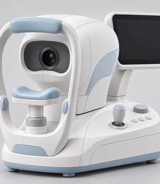
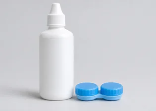

진료센터
미리 관리하면 우리 아이의
평생 시력이 달라질 수 있습니다.
Infant·Teenager
Infant·Teenager
Infant·Teenager
성장기 어린이와 청소년 10명 중 6명
가량이 근시로 불편을 겪고 있습니다.
이 시기의 근시는
고도근시나 초고도근시로 나빠질 수 있습니다.
우리 아이 시력이 완성되기 전에
체계적인 눈 관리로 좋아진 시력을 선물하세요.
성장기에 근시 진행 속도를 늦춰주는
아트로핀 치료
간단하고 효과적인 어린이 근시 예방 치료
atropine
- 아트로핀치료란?
-
근시 진행과 안축장 신장을 늦추는
근시 치료법입니다.
- 근시와 시력 저하에 영향을 주는 모양체근에
작용하고 조절 억제,
공막 성장 등을 억제하여
근시 진행 속도를 늦춰줍니다.
최근 성장기 아이들의 근시 예방과
근시의 진행 속도를
늦추는 효과와 안전이
확인되어 대학병원에서도 많이 쓰고 있습니다.
성장기 아이들의
근시 진행을 늦춰주는
아트로핀 치료
atropine
process
ATROPINE PEOCESS
아트로핀 치료 검사 프로그램
아이마다 맞춤 치료를 하기 위해 꼼꼼하고 체계적으로 검사합니다.
-
각막지형도검사
각막의 모양을 측정, 정확한
렌즈피팅을 위한 필수 검사
1
-
안저촬영검사
망막을 촬영하여 시력발달 정도와
안질환의 유무 판단 가능
2
-
안축장측정검사
각막 곡률, 안구길이, 각막두께,
각막너비, 전방깊이 검사
3
-
정밀시력검사
근시, 난시, 원시 검사 나안시력과
최대교정시력 확인 가능
4
-
각막 상피 두께 검사
렌즈가 누르는 부분인 각막 상피의
각막 두께를 재어 각막이 정상인지 확인
5
추천 대상자
-
01
-1.00 ~ -6.00
디옵터(D)의
굴절 이상
-
-
-
원시성 난시가 있거나 약시가 의심되거나
사시가 심한 경우에는 아트로핀 치료 대상이 아닙니다.
연구 효과
임상실험 효과
아트로핀,
성장기 어린이 근시진행
40-70%억제효과 입증
여러 해외 연구에서 저농도 아트로핀 점안이
가장 효과적인 근시 진행 억제 방법으로 보고되었고,
저농도 아트로핀과 드림렌즈를 함께 쓰면
한 가지 치료보다 근시 진행을 더 효과적으로
억제할 수 있다고 발표되었습니다.
임상 연구에서 농도에 따라 근시 진행을 늦추는 효과가 보고됨
아트로핀,
성장기 어린이 근시진행
40-70%억제효과 입증
여러 해외 연구에서 저농도 아트로핀 점안이
가장 효과적인 근시 진행 억제 방법으로 보고되었고,
저농도 아트로핀과 드림렌즈를 함께 쓰면
한 가지 치료보다 근시 진행을 더 효과적으로 억제할 수 있다고 발표되었습니다.
관련 논문
-
근시 진행에 관한
저농도 아트로핀(LAMP) 연구
Low-Concentration Atropine for
Myopia Progression(LAMP) Study_2019
-
소아 근시 치료를 위한
아트로핀
Atropine for the Treatment of
Childhood Myopia_2006
-
근시 치료를 위한
아트로핀 5년 임상시험
five-year clinical trial on Atropine for
the Treatment of Myopia 2_2016
서울시원안과
여야 하는 이유?
-
1
- 소아 · 청소년 근시 치료 전문 의료진
- 소아 · 청소년 근시 치료 경험이 많은 의료진이
우리 아이 시력을 바르게 관리합니다.
-
2
- 대학병원급 검사장비 보유
- 대학병원급 검사장비로 우리 아이의
눈 상태를
정밀히 검사합니다.
-
3
- 1:1 맞춤 의료서비스 제공
- 정확한 검사 결과를 바탕으로 우리 아이 눈에
가장 알맞은 드림렌즈를 맞춰 드립니다.
-
4
- 사후관리까지 철저히
- 렌즈 착용 교육부터 정기적인 눈 관리까지
체계적으로 진행합니다.
의료장비
안약
아트로핀 안약
아트로핀 안약은 근시 진행을 늦추는 효과가 확인된
안약입니다.
4~12세 근시 아이들에게 저농도는
20~70%, 고농도는
70~80% 정도의 근시진행
진행을 늦추는 효과가 있는 것으로 보고되고 있습니다.
검사장비
ARK
눈의 굴절 이상(근시 · 원시 · 난시)을 검사해
정밀한 시력검사 시
참고로 하며 각막의 곡률반경을
측정하는 장비로 3D 자동 추적 및
자동 측정으로
눈동자의 움직임과 위치를 빠르고 정확하게
측정하며
마이어링 이미지를 통한 측정으로
측정에러를 효과적으로 감소시켜
검사의
정확도를 향상시켰습니다.


ARK
검사장비
갈릴레이 G4
플라시도 방식으로 각막 표면을 분석하고 듀얼
샤임플러그 방식으로 각막 뒷면 굴곡도
분석을 통해
각막 앞뒷면과 수정체, 각막 두께,
전방 등을 정교하게 찍는 첨단 장비입니다.
또한 바른 측정시간으로
정밀한 데이터 측정이
할 수 있고 눈물층의 영향을 받지 않아
데이터 오류를 최소화하여 원추각막
진단 및 다른
부작용을 사전에 예측할 수 있습니다.